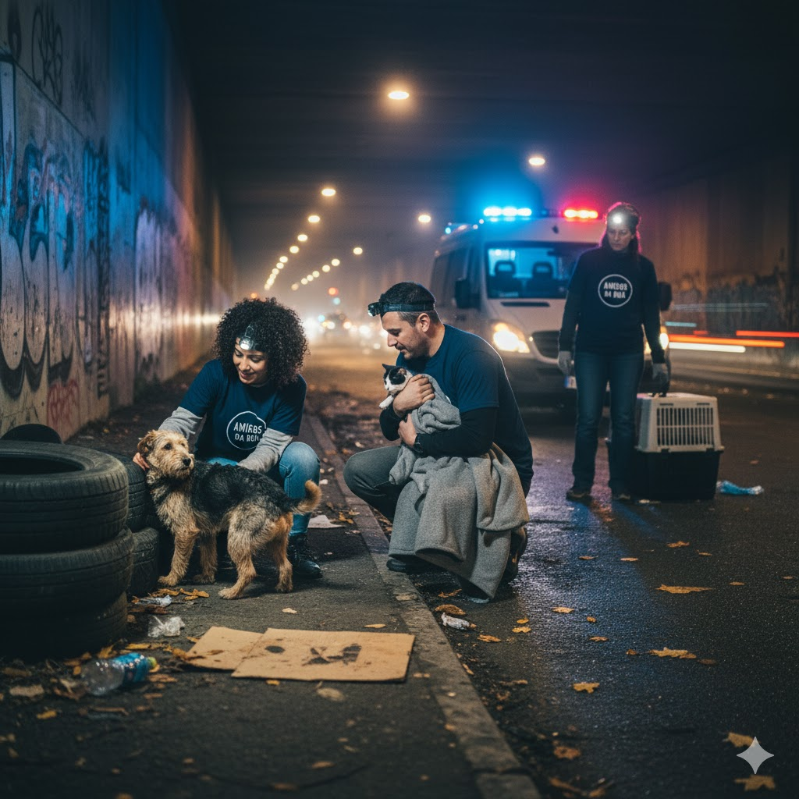
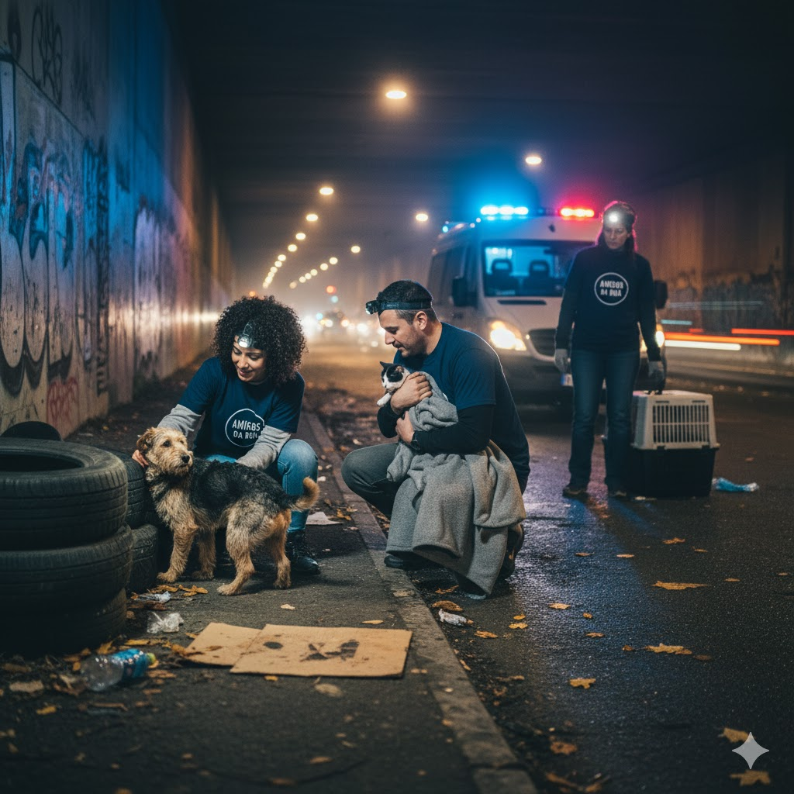
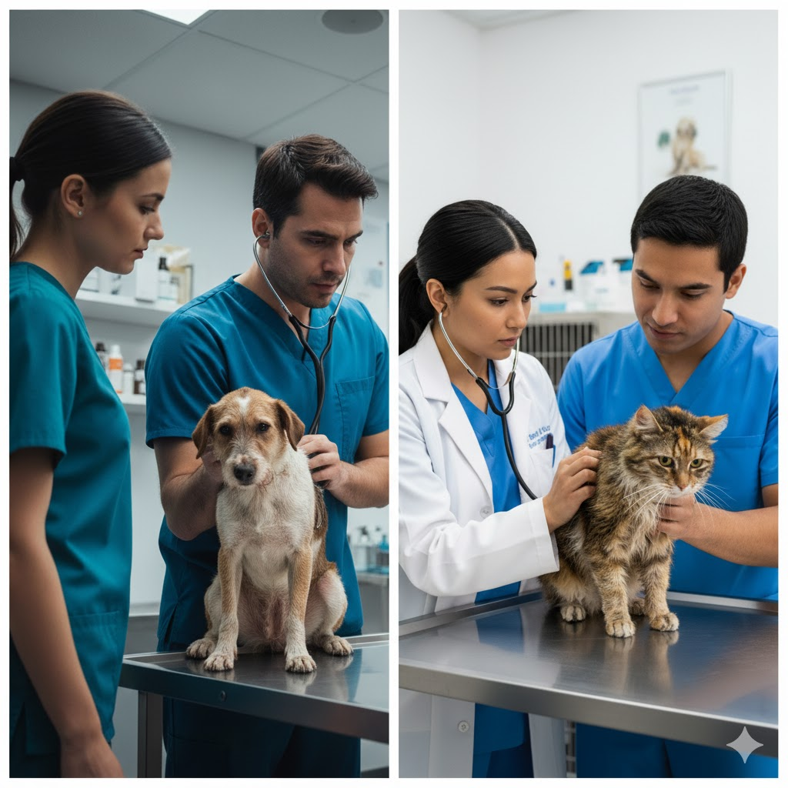
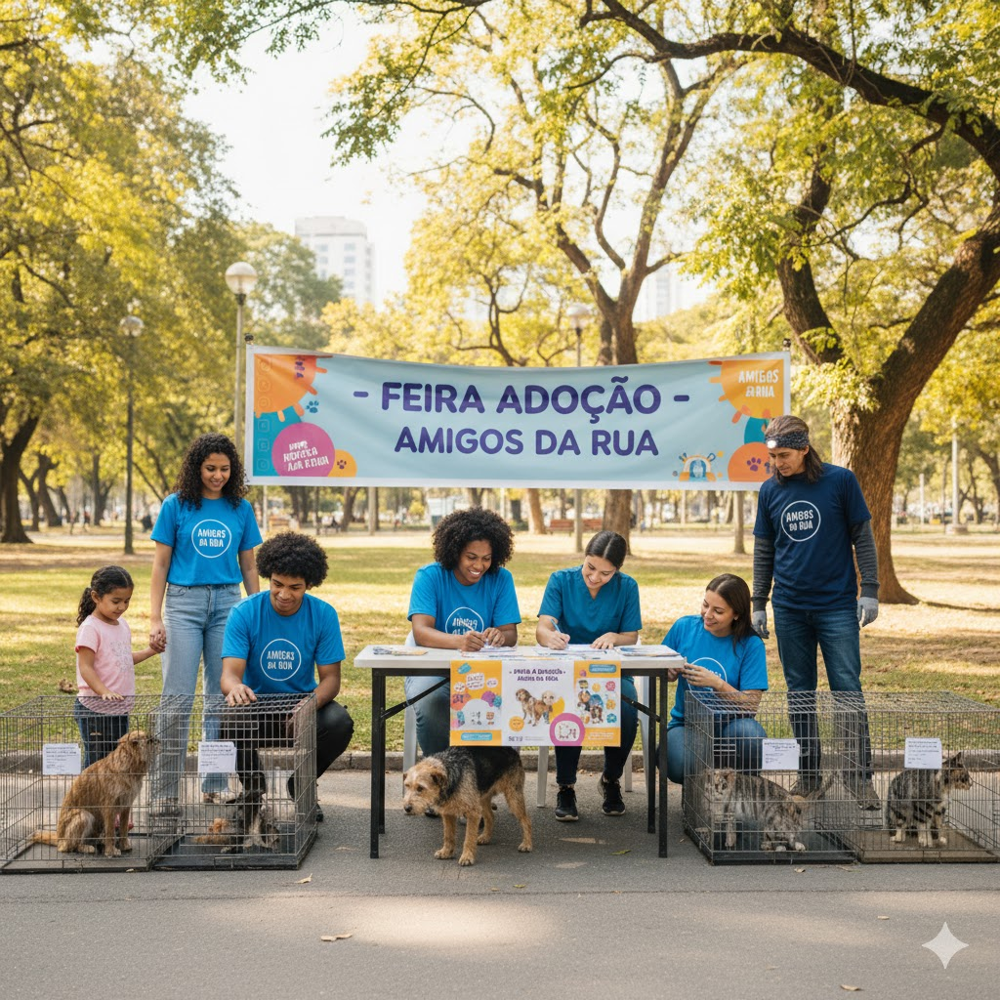

Resgate
Equipe voluntária especializada em resgatar animais em situação de risco e encaminhá-los para atendimento veterinário.
Conheça alguns dos projetos que transformam a vida de centenas de animais todos os meses.
Equipe voluntária especializada em resgatar animais em situação de risco e encaminhá-los para atendimento veterinário.
Os animais resgatados recebem atendimento veterinário, vacinação, castração e reabilitação comportamental.
Promovemos feiras e campanhas de adoção, com entrevistas e acompanhamento para garantir um lar seguro.
